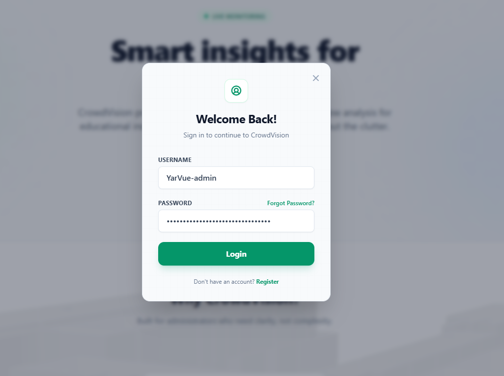

/
User Guide
On this page
Account Login
Signing in
- Click the Login button in the top navigation bar.
- The login dialog appears.
- Enter your Username.
- Enter your Password.
- Click Login to access your account.

Figure 1 — The login dialog. Enter your username and password, then click Login.
Enterprise sign-in
If your organization uses Single Sign-On, you sign in through your company identity provider instead. See Enterprise Login (SSO).
Locked navigation
To protect your data, the core areas — Dashboard, Digital Twin, Domains, and the Administrator Panel — stay locked until you are signed in.
You do not have to click Login first. If you open any locked area while signed out, a Sign in to continue popup appears. Enter your credentials there, and once you are signed in the application unlocks and takes you straight to where you were headed.

Figure 2 — Opening a locked area while signed out prompts you to sign in, then continues to your destination.